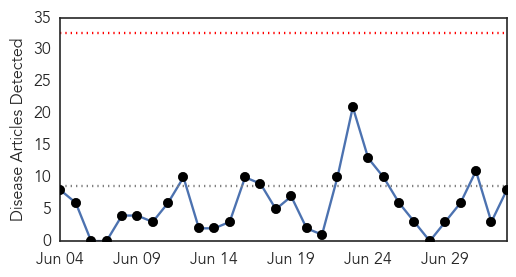
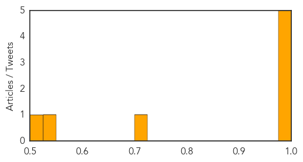
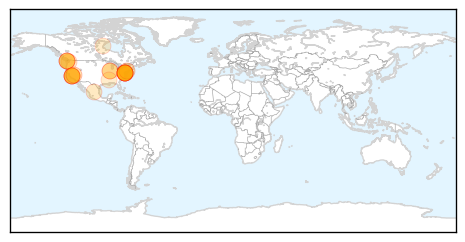
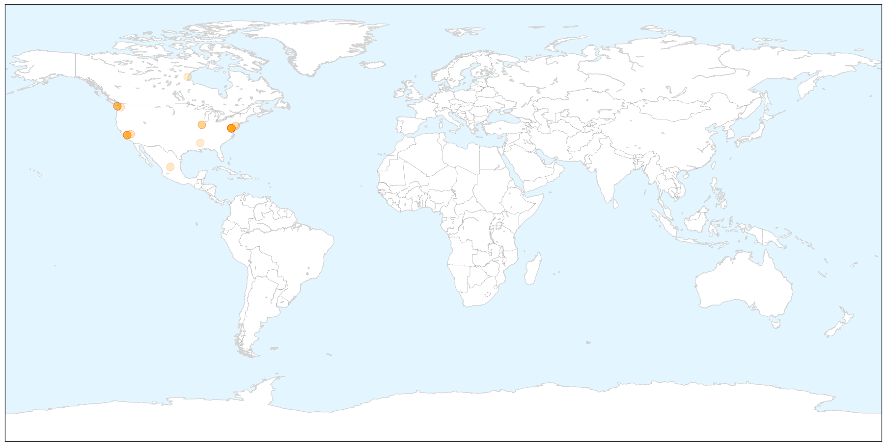

Cholera
30-Day Web Trend
0 alerts, 0 warnings

30-Day Twitter Trend
1 alerts, 0 warnings

Article Locations


Article Confidences
Top Articles:
- 0.998
- Marginal Drop In Cholera Cases – Daily Guide Ghana
- 0.997
- Achimota Hospital records seven cholera cases
- 0.995
- 29 killed by cholera in South Sudan
- 0.992
- Cholera: PAHO urges Member States to remain vigilant. CPS advises travellers to Haiti and Dominican Republic to take preventative measures
- 0.990
- UN Senior Coordinator says cholera eradication in Haiti will take years
- 0.718
- South Sudan: South Sudan Situation: UNHCR Regional Update 68 (29 -03 July 2015)
- 0.545
- Local Government ministry fights cholera outbreak
- 0.522
- Cholera kills seven, nine hospitalised in Plateau
Top Tweets:
-
No tweets found for Jul 03, 2015
Measles
30-Day Web Trend
2 alerts, 0 warnings

30-Day Twitter Trend
1 alerts, 0 warnings

Article Locations

X

Article Confidences

Top Articles:
- 0.962
- Measles kills first patient in 12 years
- 0.958
- Measles Takes First American Life Since 2003 -- NYMag
- 0.957
- Measles killed a Washington woman
- 0.920
- Washington Woman Is First U.S. Measles Death in 12 Years
- 0.918
- Case for vaccination: First measles fatality in US in over a decade -
- 0.905
- Ebola vaccine trial…to be or not to be?
- 0.904
- First person to die of the measles in a dozens years
- 0.893
- Measles death in US is the first in 12 years
- 0.886
- Officials Confirm First U.S. Measles Death in 12 Years
- 0.857
- CORRECTED VERSION — UPDATE: Clallam County woman's death by measles is first in nation in 12 years and first in state since 1990 -- Port Angeles Port Townsend Sequim Forks Jefferson County Clallam Cou
- 0.814
- The US records its first measles death in 12 years
- 0.790
- A woman died in Washington
- 0.785
- Measles death in US: First fatality since 2003
- 0.776
- A woman dies of measles, and antivaccinationists think it’s a conspiracy – Respectful Insolence
- 0.761
- US Confirms First Measles Death In Over a Decade
- 0.751
- Washington Woman's Demise Is First In U.S. Since 2003
- 0.722
- Woman's death by measles is first in U.S. since 2003
- 0.722
- KinderCare requiring measles shots for infants’ caregivers
- 0.681
- Washington State Woman First To Die Of Measles In 25 Years
- 0.637
- Measles leads to 1st U.S. death in 12 years - Xinhua
- 0.630
- Fiji Times Online
- 0.621
- The first U.S. measles death since 2003
- 0.612
- Declining vaccine rates: Mostly a white problem
Top Tweets:
-
No tweets found for Jul 03, 2015